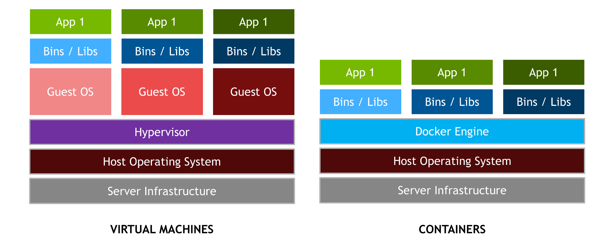
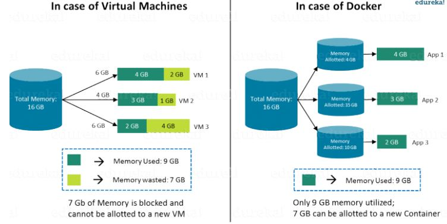
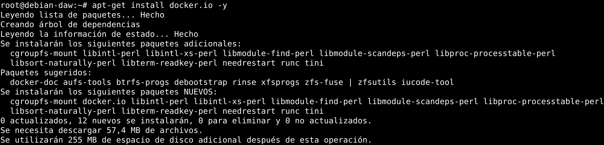
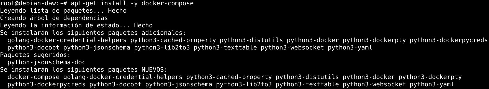

Introducción a Docker y despliegue de aplicaciones Symfony
Brais Arias Rio
(profesor en prácticas)
Liceo La Paz
https://braisarias.github.io/liceointernship-deploy-docker/

Quien soy?
Ingeniero informático
Consultor de software libre / SysAdmin en iCarto
Oficina de Software Libre de la AMTEGA (Xunta)
Mancomún Podcast
Asociacionismo: GPUL - KDE España
(Ahora) también estudio Русский язык (ruso)
Qué es Docker?
- Sistema de virtualización
- Basado en contenedores
- Software libre (Apachev2)
- https://www.docker.com/
Usos de Docker
- Automatización de despliegues
- Aislamiento y seguridad de aplicaciones
- Entorno de pruebas
Contenedores vs Máquinas virtuales
 Comparing Virtual Machines and Containers. Source: https://medium.com/@faizanbashir/docker-containers-101-e47f594a0edContenedores vs Máquinas virtuales
 Memory consumption of VMs vs Dockers. Source: https://devopedia.org/dockerComponentes de Docker
- Docker Engine: Núcleo de Docker, gestiona la creación, ejecución, etc de loc contenedores
- Docker Hub: Repositorio oficial de imágenes de Docker
- Docker Compose: Herramienta para definir aplicaciones/sistemas compuesto de contenedores
Qué se maneja con Docker?
- Imágenes: plantilla estática para creación de contenedores
- Dockerfile: ejemplo
- Contenedores: espacios aislados para ejecutar y lanzar aplicaciones
- Volúmenes: espacios para mantener información más allá de la vida de un contenedor
- Red y mapeo de puertos: para poder acceder a servicios de dentro del contenedor
Instalación de Docker en GNU/Linux
sudo apt-get install -y docker.io

Instalación de Docker Compose en GNU/Linux
sudo apt-get install -y docker-compose

Comandos básicos de Docker
- docker start <contenedor>: Inicia un contenedor
- docker run <image> <comando>: Inicia un nuevo contenedor de la imagen image y lanza en el un comando
- docker pull <image>: Obtiene del repositorio la imagen
- docker ps [-a]: Lista los contenedores
- docker rm <contenedor>: Elimina el contenedor
- docker port <contenedor>: Lista el mapeo de puertos del contenedor
- docker stop <nombre>: Para un contenedor
Despliegue de Aplicación Symfony con Docker
- Proyecto Symfony funcionando
- Creamos fichero de docker-compose
- Ejecutamos docker-compose up
- Configuración de Apache como proxy inverso
Proyecto Symfony
Usamos el proyecto que queramos. En este ejemplo: https://github.com/braisarias/my-luckynumber-symfony.
Fichero de configuración
En el docker-compose.yml (ejemplo) se define que necesita nuestra aplicación, por ejemplo:
- Apache
- PHP
- Symfony
- MySQL / MariaDB / PostgreSQL
Construír contenedor y ejecutarlo
Con el comando docker-compose up se construye(n) y se lanza(n) el/los contenedor(es) necesarios
Proxy inverso
Si tenemos varias aplicaciones en nuestro servidor necesitaremos seguramente un Proxy Inverso

Introducción a Docker y despliegue de aplicaciones Symfony
Brais Arias Rio
(profesor en prácticas)
Liceo La Paz
https://braisarias.github.io/liceointernship-deploy-docker/